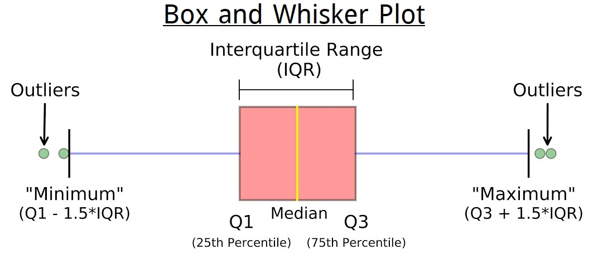

Moments, Skewness & Kurtosis
Abdullah Al Mahmud
Moments
Central Moments
Central Moments: \(\mu_r=\frac{\sum(x_i-\bar x)^r}{n}\)
- \(\mu_1=\frac{\sum(x_i-\bar x)}{n}=\frac{\sum x_i}{n}-\frac{n \bar x}{n}=\frac{n \bar x}{n}-\frac{n \bar x}{n}=0\)
- \(\mu_2=\frac{\sum(x_i-\bar x)^2}{n}=\sigma^2\)
- \(\mu_3=\frac{\sum(x_i-\bar x)^3}{n}\)
- \(\mu_4=\frac{\sum(x_i-\bar x)^4}{n}\)
- For grouped data: \(\mu_r=\frac{\sum f_i(x_i-\bar x)^3}{n}\)
Raw Moments
\(\mu_r'=\frac{\sum(x_i-a)^r}{n}\); a is arbitrary number
\(\mu_1'=\frac{\sum(x_i-a)}{n}=\frac{\sum x_i}{n}-\frac{na}{n}=\bar x-a\)
Raw & Central Moments: Relationship
- \(\mu_2 = \mu_2'-\mu_1'^2\)
- \(\mu_3 = \mu_3'-3\mu_2'\mu_1'+2\mu_1'^3\)
- \(\mu_4 = \mu_4'-4\mu_3'\mu_1' + 6 \mu_2'\mu_1'^2-3\mu_1'^4\)
How to Remember??
\(\downarrow\)
How to Remember (Skip)
\((a-b)^3=a^3-3a^2b+3ab^2-b^3\)
\((a-b)^4=a^4-4a^3b+6a^2b^2-4ab^3+b^4\) (Pascal triangle can be used)
\(a^r=\mu_r'\)
\(b^r=\mu_1'^r\)
Now,
\(\mu_3 = \mu_3'-3\mu_2'\mu_1'+2\mu_1'^3\)
- Remove the penultimate term and let coefficient of it is k
- Use (-k) as the coefficient of the last term.
Changing Origin of Moments
From \(\mu_r'(a)\) to \(\mu_r'(k)\)
Assume, \(a^r = \mu_r'(a)\), \(b = a - k\)
Binomial Formulae
- \((a+b)^1 = a + b\)
- \((a+b)^2 = a^2 + 2ab + b^2\)
- \((a+b)^3=a^3+3a^2b+3ab^2+b^3\)
- \((a+b)^4=a^4+4a^3b+6a^2b^2+4ab^3+b^4\)
- \(\mu_1'(k) = \mu_r'(a) + b\)
- \(\mu_2'(k) = \mu_2'(a) + 2 \mu_1'(a) + b^2\)
- ?
- ?
Central Moments from Raws
Use \(k = \bar x\)
That’s it! DO NOT MEMORIZE!
Skewness
Lack of symmetry

- -Ve Skew \(\rightarrow \bar X \lt Me \lt Mode\)
- +Ve Skew \(\rightarrow \bar X \gt Me \gt Mode\)
- No Skew \(\rightarrow \bar X = Me = Mode\)
Kurtosis

Normal distribution \(\rightarrow\)
- Most students get average marks
- Higher and lower marks are obtained by lesser number of students
Measures of SKewness
Pearson’s Coefficient: \(SK_P=\frac{Mean-Mode}{\sigma}=\frac{3(Mean-Median)}{\sigma} ;(-3,3)\)
(\(Mode=3Me-2\bar X\))
- Bowley’s Coefficient: \(SK_B=\frac{Q_3+Q_1-2Me}{Q_3-Q_1}; (-1,1)\)
- Kelly’s Coefficient: \(SK_k=\frac{D_1+D_9-2Me}{D_9-D1}\)
- Method of Moments: \(\beta_1=\frac{\mu_3^2}{\mu_2^3}\)
Estimate Skewness
4, 23, 55, 70, 74, 78, 86, 89
Measures of Kurtosis
- Pearsons’s Coefficient of Moments, \(\beta_2 = \frac{\mu_4}{\mu_2^2}\)
- Percentile Coefficient, \(K=\frac{\frac 1 2 (Q_3-Q_1)}{P_{90}-P_{10}}\)
\(\gamma_2=\beta_2-3\)
\(\gamma_2=0 \space or \space \beta_2=3) \rightarrow\) Mesokurtik \(\gamma_2\gt0 \space or \space \beta_2 \gt 3) \rightarrow\) Leptokurtik \(\gamma_2\lt0 \space or \space \beta_2\lt3) \rightarrow\) Platykurtik
9, 7, 8, 6 \(\rightarrow\) Find kurtosis
Five Number Summary
- Minimum
- Maximum
- \(Q_1, Q_2, Q_3\)
Box and Whisker Plot

Problems
- \(\bar X = 65, Me = 70, SK_P = -0.5\); Mod = ? CV = ?
- GM & HM of quartiles of a symmetrical distribution are 8 and 6.4, respectively. Find median.
- Mean, SK(P), coefficient of skewness and CV of distribution are 50, 0.4, and 40%, respectively. Find SD, mode, & median.
- Variance of a mesokurtik distribution is 4. Find \(\mu_4\).
- First three moments about 2 are 1, 16, and -40. Find them about 0.